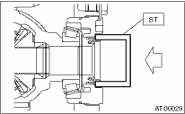

1. Lift the vehicle.
2. Remove the front exhaust pipe and center exhaust pipe.
(Non-turbo model)

(Turbo model)
3. Remove the differential gear oil drain plug, and drain the differential gear oil.

|
(A) |
Oil pan |
|
(B) |
Drain plug (ATF) |
|
(C) |
Differential gear oil drain plug |
4. Replace the gasket with a new part and tighten the differential oil drain plug.
Tightening torque:
Copper gasket
70 N·m (7.1 kgf-m, 51.6 ft-lb)
Aluminum gasket
44 N·m (4.5 kgf-m, 33 ft-lb)
5. Separate the front drive shaft from the transmission.
6. Remove the differential side retainer oil seal using a screw driver wrapped with vinyl tape etc.
7. Using the ST, install the differential side retainer oil seal by lightly tapping with a hammer.
| ST 18675AA000 | DIFFERENTIAL SIDE OIL SEAL INSTALLER |

8. Apply oil to the oil seal lips.
9. Install the front drive shaft using the ST.
| ST 28399SA010 | OIL SEAL PROTECTOR |
10. Install the front exhaust pipe and the center exhaust pipe.
(Non-turbo model)
(Turbo model)
11. Lower the vehicle.
12. Pour differential gear oil into the gauge hole.
Recommended gear oil:
Gear oil capacity:
1.1 — 1.3 L (1.3 — 1.4 US qt, 1.0 — 1.1 Imp qt)
13. Check the gear oil level.